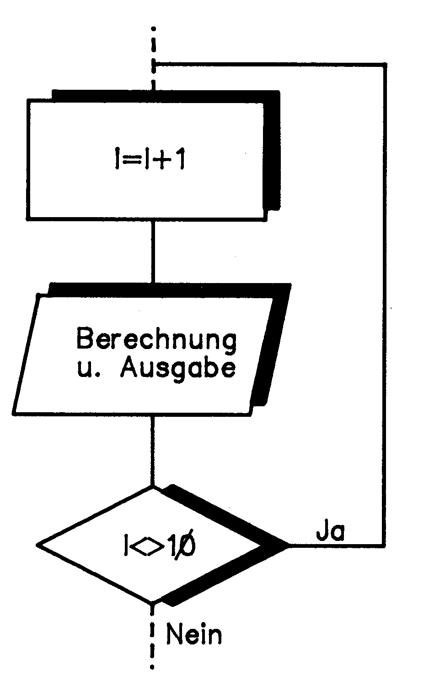
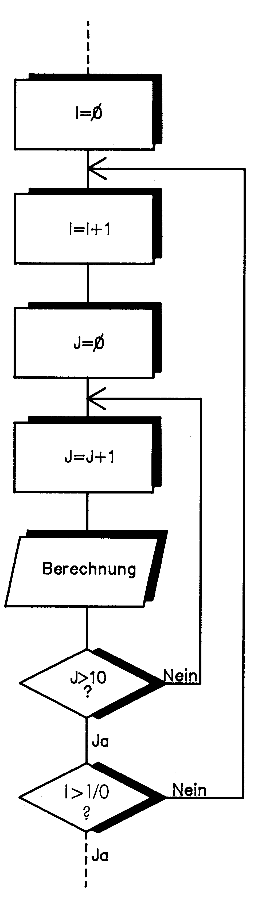

Schleifen — Problembewältigung mit Komfort
Wollten Sie schon immer wissen, wie man Felder schnell und komfortabel behandeln kann? Wir zeigen Ihnen, wie Sie dieses Problem mit den Schleifenanweisungen des Basic V 2.0 lösen können.
Wenn Sie den laufenden Basic-Kurs aufmerksam verfolgt haben, kennen Sie sich jetzt mit der Handhabung von Variablen und der Bildschirmverarbeitung aus. Vielleicht haben Sie sich auch schon mit der mehrfach verwendeteten IF..THEN-Anweisung beschäftigt. Diesmal setzen wir uns nicht nur eingehend mit diesem wichtigen Basic-Bestandteil, sondern auch mit einer weiteren Schleifenart auseinander. Sie erfahren alles über die Basic-Anweisungen IF..THEN und FOR..NEXT. Dazu finden Sie natürlich wieder eine Menge Informationen, die im Handbuch des C 64 fehlen. Lesen Sie sich aber zunächst die Seiten 38 bis 40 im Handbuch des C 64 durch, um sich einen kleinen Überblick über die diesmal behandelten Anweisungen zu verschaffen.
Programmschleifen
Schleifen kennen Sie aus vielen Bereichen des normalen Alltags. Seien es Geschenkverpackungen oder gebundene Schnürsenkel. Doch was hat das alles mit Programmierung zu tun? Schleifen sind Programmteile, die eine oder mehrere Anweisungen ständig wiederholen, bis eine bestimmte, vom Programmierer festgelegte Bedingung eintritt. Man spricht in diesem Zusammenhang oft von wahren und falschen Aussagen, die Ihnen sicherlich aus der Mathematik bekannt sind. Programmschleifen werden also so lange durchlaufen, bis die gestellte Bedingung wahr ist. Sehen wir uns das an einem konkreten Beispiel an.
10 I=0
20 R=0
30 I=I+1
40 R=I*I
50 PRINT "DAS QUADRAT VON"I" IST "R
60 IF I < > 10 THEN 30
70 ENDHier haben wir eine Schleifenstruktur mit Hilfe der IF..THEN-Anweisung aufgebaut. Der Programmteil zwischen den Zeilen 30 bis 60 wird so lange durchlaufen, wie die Variable »I« nicht den Wert zehn angenommen hat. In Zeile 30 wird »I« jedesmal um eins erhöht. In Zeile 60 wird nun die Variable »I« geprüft. Die IF-Anweisung fragt hier ab, ob »I« ungleich zehn ist. Ist das der Fall springt das Programm zu dem hinter THEN stehenden Sprungziel, also in Zeile 30. Ein Programmablaufplan (PAP) veranschaulicht das hier verwendete Schleifenprinzip (Bild 1). Solche Ablaufpläne werden bei der Programmierung verwendet, um ein Problem vor der Umsetzung auf den Computer grafisch darzustellen. Die hier verwendete Methode hat den Nachteil, daß der Schleifenzähler (»I«) immer wieder im Programm hochgezählt und abgefragt (IF-Anweisung in Zeile 60) werden muß. Das Basic des C 64 bietet noch eine andere Möglichkeit zur Schleifenprogrammierung. Es handelt sich dabei um die FOR..NEXT-Anweisung. Bei dieser Schleifenform entfällt das Hochzählen und Abfragen des Zählers, wie das bei obiger IF..THEN-Konstruktion der Fall ist. Mit einer solchen FOR..NEXT-Schleife läßt sich das obige Beispiel folgendermaßen lösen:

10 FOR I=0 TO 10
20 R=I*I
30 PRINT "DAS QUADRAT VON"I" IST "R
40 NEXT I
50 ENDIn Zeile 10 wird hier als erstes festgelegt, wie oft die Schleife durchlaufen werden soll. »I« fungiert hier als Zähler, von dessen Wert es abhängt, ob der Vorgang nochmals abgearbeitet wird oder nicht. Die Obergrenze wird durch die Zahl, die hinter »TO« steht, festgelegt. Das bedeutet aber nicht, daß die Schleife jetzt zehnmal abgearbeitet wird. In diesem Fall geschieht dies genau elfmal (0 bis 10). Es ist nicht vorgeschrieben, mit welchem Wert der Zähler zu »starten« hat (in unserem Fall Null). Sie können genauso jede andere Zahl verwenden, sofern sie kleiner als die Obergrenze ist. Die Anzahl der Durchläufe errechnet sich aus der Differenz der Untergrenze (hier Null) und der Obergrenze (in unserem Beispiel zehn) plus eins. Jetzt wissen Sie zwar wie eine Schleife gestartet wird, doch wo ist der Endpunkt zu suchen? Dieser wird mit der Anweisung NEXT gesetzt. Hinter NEXT steht noch einmal die Zähl-Variable. Diese kann bei diesen einfachen Schleifen auch weggelassen werden. Bei umfangreicheren Konstruktionen, wie wir sie weiter unten behandeln, wird die Angabe des Zählers hinter NEXT allerdings zwingend notwendig. Auch bei kleineren Schleifen sollte der Zähler wegen der besseren Übersicht mit angegeben werden. Stößt der Computer auf NEXT wird als erstes der Zähler, in unserem Falle »I«, um eins erhöht. Danach prüft der Computer, ob die Obergrenze überschritten ist. Ist das nicht der Fall, kommen die zwischen den Anweisungen FOR..TO und NEXT eingeschlossenen Zeilen erneut zur Ausführung.
Die Anwendung
Jetzt haben Sie die theoretischen Grundlagen für die Programmierung mit IF..THEN und FOR..NEXT. Im folgenden sehen wir uns mögliche Anwendungen und Einsatzgebiete dieser Anweisungen etwas näher an.
Betrachten wir als erstes die IF..THEN-Anweisung. Sie haben gesehen, daß man mit IF..THEN Werte abfragen und entsprechend verzweigen kann. Damit aber nicht genug. Nach THEN kann nicht nur ein Sprungziel angegeben werden, wie Sie das bisher gesehen haben. Jede beliebige Basic-Anweisung kann THEN folgen. Mehrere Anweisungen werden durch einen Doppelpunkt getrennt. Dazu ein kleines Beispiel:
10 A$ = "TEST"
20 INPUT B$
30 IF B$="AENDERN" THEN A$="TEST1":GOTO 50
40 IF B$="NEU" THEN A$="TITEL"50 PRINT A$Als erstes wird die Variable A$ mit dem String »TEST« vorgelegt. Danach verlangt der Computer eine Eingabe. Haben Sie »AENDERN« eingegeben, tritt die IF..THEN-Anweisung in Zeile 30 in Aktion. A$ erhält den String »TEST1« zugewiesen. Danach wird nach Zeile 50 gesprungen, wo A$ mit dem veränderten Wert ausgegeben wird. Wird »NEU« eingegeben, arbeitet der Computer zwar ebenfalls die Zeile 30 ab, erkennt aber, daß die Variable B$ nicht gleich »AENDERN« ist, bricht die IF..THEN-Anweisung ab und fährt sofort mit Zeile 40 fort. Dort findet sich aber eine in diesem Fall wahre Aussage, folglich wird die hinter THEN stehende Anweisung diesmal ausgeführt. Geben Sie weder »AENDERN« noch »NEU« ein, werden beide IF-Abfragen ergebnislos durchlaufen und der ursprüngliche String ausgegeben.
Sehen wir uns nun einige Anwendungen für die FOR..NEXT-Anweisung näher an. Am einfachsten ist hier die Möglichkeit, das Programm für kurze Zeit anzuhalten, wenn beispielsweise eine Meldung am Bildschirm ausgegeben wird.
10 FOR I=1 TO 500 : NEXTDamit wird einfach der Schleifenzähler »I« von eins bis 500 hochgezählt. Während dieser Zeit passiert am Bildschirm nichts. Dem Programm-Benutzer kommt es so vor, als wenn der Computer eine Ruhepause einlegt.
Größtenteils wird die FOR..NEXT-Anweisung bei der Bearbeitung von dimensionierten Feldern eingesetzt. Eine genaue Erklärung zu Feldern finden Sie in Ausgabe 11/86 des 64'er-Magazins auf Seite 21. Konstruieren wir dazu ein kleines Beispiel. Über den INPUT-Befehl soll eine Tabelle mit Bedienereingaben gefüllt und danach verändert ausgegeben werden. Erfaßt werden Netto-Preise, die dann mit Mehrwertsteuer und Bruttowert ausgegeben werden (Listing 1). Hier werden als erstes drei Felder dimensioniert. Danach liest die erste Schleife (Zeile 60 bis 100) die Netto-Werte ein. Die IF-Anweisung zwingt die Schleife zum Abbruch, wenn als Netto-Wert »9999« eingegeben wird. Sie sehen also, daß man eine FOR..NEXT-Schleife ohne weiteres verlassen darf. Der Schleifenzähler »I« behält dann den Wert, den er zum Zeitpunkt des Abbruchs hat. »I« wird in diesem Beispiel auch als Feldindex verwendet. Es wird also automatisch immer das nächsthöhere Feld bearbeitet, wenn ein neuer Schleifendurchlauf erfolgt. Nach der Eingabe-Schleife folgt die Berechnung der Mehrwertsteuer (Zeile 110 bis 150). Die Steuer wird in einer eigenen Tabelle abgelegt. In Element Null des »MWST«-Feldes steht also die Mehrwertsteuer zu dem Betrag, der in Element Null des »NETT«-Feldes untergebracht ist. Stößt die IF-Anweisung auf die ebenfalls im Netto-Feld gespeicherte Endebedingung »9999« wird auch dieser Programmteil abgebrochen. Danach wird noch das »BRUT«-Feld mit den Bruttowerten versehen (Zeile 160 bis 200). Die Ausgabe erfolgt nach dem Bildschirmlöschen und ist tabellenartig aufgebaut (Zeile 210 bis 270).
Sobald innerhalb einer Schleife eine weitere Schleife programmiert wird, bezeichnet man dies als verschachtelte Schleife. Das klingt jetzt vielleicht unheimlich kompliziert, wird aber nach folgendem Beispiel schnell seine Schrecken verlieren. Um den ganzen Bildschirm mit einem Zeichen aufzufüllen, benötigen Sie zwei Schleifen. Eine muß die Position innerhalb der Bildschirmzeile bestimmen, die andere die Bildschirmzeile selbst.
10 PRINT CHR$(147)
20 FOR I=1 TO 24
30 FOR Y=1 TO 40
40 PRINT "A";
50 NEXT Y
60 NEXT IVerschachteln von Schleifen
Die in Zeile 20 geöffnete Schleife ist für die Bildschirmzeile verantwortlich, in der das nächste »A« erscheinen soll. Allerdings muß, bevor eine neue Zeile beschrieben wird, die aktuelle mit Zeichen aufgefüllt werden. Dies erledigt die Schleife in Zeile 30 bis 50. Sie wird 40mal durchlaufen und bringt fortlaufend ein »A« auf den Bildschirm. Ist diese Schleife abgearbeitet, beginnt eine neue Bildschirmzeile und die Schleife in der Schleife tritt wieder in Aktion. Das geht so lange, bis der Zähler »I« die Obergrenze 24 überschritten hat, was der Anzahl der zu beschreibenden Bildschirmzeilen entspricht. In der Schleife in Zeile 20 bis 60 ist also festgelegt, wie oft die Schleife zwischen Zeile 30 und 50 aktiviert wird. Auf diese Art und Weise können Sie auch zwei verschiedene Felder bearbeiten. Das Ganze könnte zum Beispiel so aussehen:
10 FOR I=1 TO 10
20 FOR Y=1 TO 10 STEP 2
30 A(I)=A(I)+B(Y)
40 NEXT Y
50 NEXT IIn Zeile 20 sehen Sie hier eine weitere Variante bei der Programmierung von FOR..NEXT-Schleifen, die STEP-Anweisung. Diese veranlaßt das Erhöhen des Schleifenzählers um die hinter STEP angegebene Schrittweite. So werden in diesem Beispiel konkret die Elemente 1, 3, 5, 7 und 9 des Feldes »B« angesprochen. Die Inhalte dieser Elemente werden zu jedem einzelnen des Feldes »A« addiert. Das Prinzip der verschachtelten Schleifen sehen Sie wieder in einem kleinen Programmablaufplan zusammengefaßt (Bild 2).

Die IF..THEN-Anweisung läßt sich ebenfalls verschachteln. Dazu wieder ein kleines Beispiel:
10 INPUT A
20 IF A< > 1 THEN IF A=2 THEN B$="OK"
30 PRINT B$Hier wird eine zweite IF-Anweisung aktiviert sobald die Eingabe ungleich eins ist. Solche IF-Verschachtelungen sind natürlich durch die maximale Länge von 80 Zeichen einer Basic-Zeile nur begrenzt anwendbar.
Komfortable Schleifentechniken
Um Ihnen zu zeigen, daß es noch komfortabler geht, stellen wir Ihnen hier noch im Überblick die Möglichkeiten des Basic 7.0 vor, das im C 128 eingebaut ist. So bietet die IF-Anweisung einige Varianten, die diese Anweisung von der Einschränkung durch die maximalen Zeilenlänge entheben. Die IF-Anweisung ist beim C 128 um die Anweisungen ELSE und BEGIN erweitert. Mit ELSE wird ein Alternativpfad eingeleitet. BEGIN ermöglicht das Programmieren von mehreren Programmzeilen innerhalb einer IF-Anweisung.
DO ist eine weitere Komponente des C 128-Basic zum Programmieren von Schleifen. Der Interpreter wird angewiesen, eine Schleife so lange zu durchlaufen, bis eine bestimmte Bedingung, die in der DO-Schleife näher deklariert wird, erfüllt ist. Diese Anweisung erlaubt sogar zwei verschiedene Abbruchbedingungen, deren Erklärung aber jetzt zu weit führen würde. Außerdem kann diese Schleife durch eine spezielle Anweisung jederzeit abgebrochen werden.
Aufbruch in die Datenverarbeitung
Nachdem Sie jetzt bereits mit den Grundbegriffen der Basic-Programmierung vertraut sind, lernen Sie in der nächsten Ausgabe die Arbeit mit Disketten-Daten näher kennen. Sie erfahren alles Wichtige über die Arbeit mit Dateien. Das inzwischen auch für die Heimcomputer wichtigste Speichermedium, die Diskette, verliert den vielleicht noch etwas rätselhaften Charakter und öffnet Ihnen das Tor zur Dateiverwaltung.
(rf)